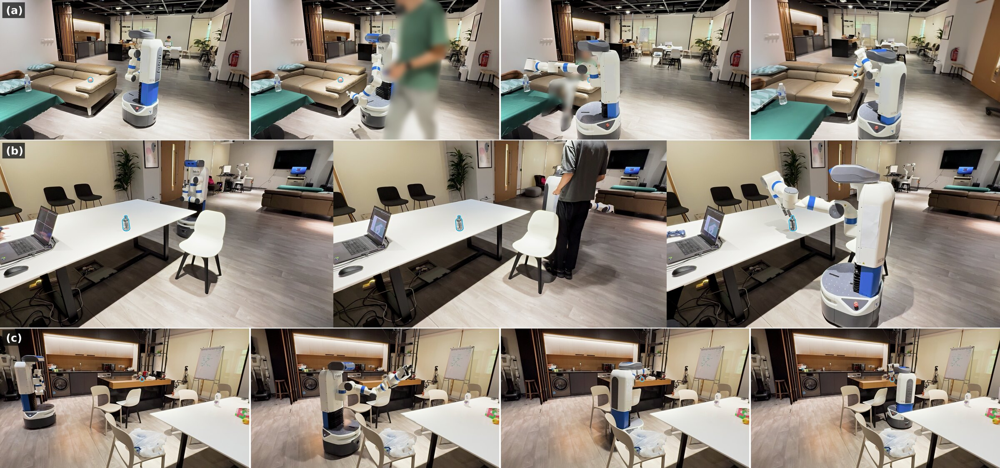
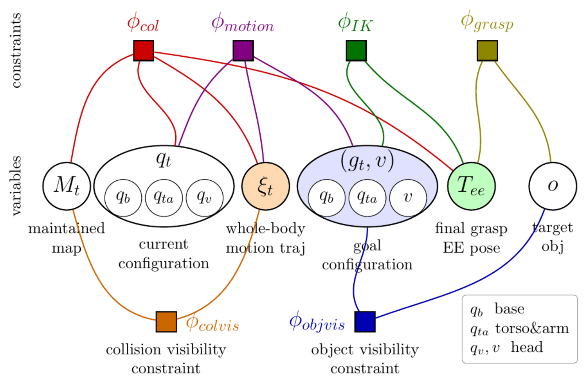
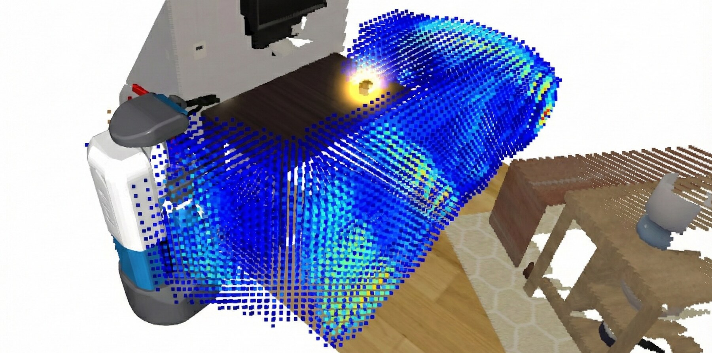
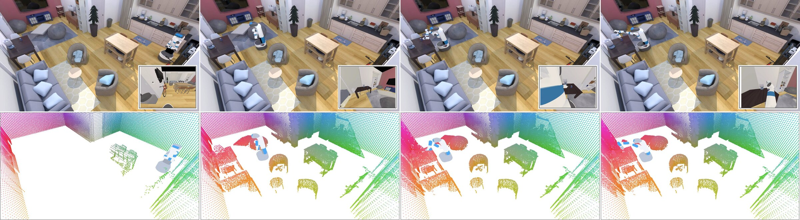
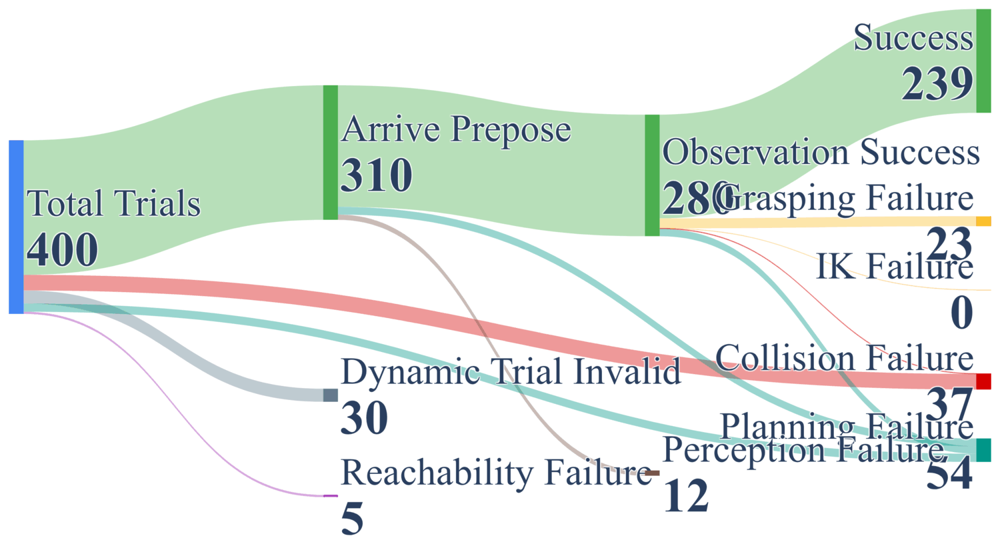
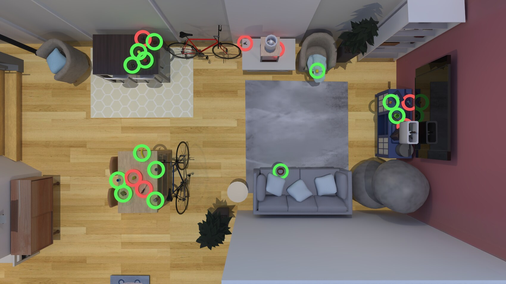

Visibility-Aware Mobile Grasping in Dynamic Environments
Tianrun Hu1,2,
Anxing Xiao1,2,
David Hsu1,2,
Hanbo Zhang3,*
1School of Computing, National University of Singapore2Smart Systems Institute, National University of Singapore3Shanghai Innovation Institute, Shanghai, China
The interactive demo runs our system in simulation on RoboMesh. A RoboMesh account is required.

Visibility-aware mobile grasping in the real world.(a) A moving person enters the robot’s route, and the robot reacts before grasping the apple.
(b) The robot navigates around a person and a chair to reach a bottle on a dining table.
(c) The robot navigates through tightly spaced chairs before reaching an apple on the workstation.
Faces are blurred for privacy.
Interactive Demo
Try it yourself, in your browser.
Our system runs as an interactive demo on RoboMesh, the robot demo platform of the
Smart Systems Institute (SSI) at NUS. RoboMesh hosts demos from many groups; ours is
the room “Visibility Awared Mobile Grasping”, from the
AdaComp Lab. Say something as simple as “grasp this”, point at the object
you mean, and watch the robot plan and grasp it on its own, in simulation. Nothing to install.
>grasp this
+ point at the object
That is the whole instruction. The point says which object; the words say what to do.
1Sign in to RoboMesh and open our room, Visibility Awared Mobile Grasping.
2Say or type what you want, even just “grasp this”, and point at the object. Language and a point together leave no ambiguity about what you mean.
3The robot decides where to look and how to move its whole body, online and together. It works around whatever is in the way and grasps, recovering on its own when an attempt fails.
Our room on RoboMeshVisibility Awared Mobile GraspingAdaComp Lab · SSI, NUS
A RoboMesh account is required. RoboMesh hosts many groups’ demos, so after signing in, open the room above to reach ours.
robomesh.ssilabs.org/webapp
Abstract
We consider mobile grasping in unknown and dynamic environments, where a robot must approach and grasp a target object using a camera with a limited field of view. This setting introduces two visibility constraints. Incomplete environmental observations can create collision risks along the whole-body trajectory, while occlusions can hinder object pose refinement during grasping.
Previous systems often assume known or static environments and decouple perception from motion, leaving safety unresolved around unobserved obstacles. We present a unified system that enforces both visibility constraints at runtime through three core components. A velocity-aware gaze policy directs perception toward fast-moving regions of the planned swept volume, a hierarchical subgoal policy samples grasp and intermediate configurations that maintain target visibility, and a real-time whole-body planner replans over a receding horizon as the map updates.
Across 400 randomized simulation scenarios and real-world trials on a Fetch mobile manipulator, our system achieves success rates of 70.4% in unknown static environments and 57.9% in dynamic environments, outperforming the decoupled navigation-and-manipulation strategy by 16.3 and 9.3 percentage points, respectively, while significantly reducing collisions.
Video
Supplementary video (3:04): the two visibility constraints, the velocity-aware gaze policy and the subgoal
hierarchy, simulation and real-robot rollouts — including a person stepping into the route and a
blocked manipulation attempt that re-samples its pre-grasp — closing with the quantitative results.
Two Visibility Constraints
Mobile grasping already couples collision avoidance, kinematics, and grasping — constraints existing
systems handle under a known map. A limited field of view in an unknown environment adds two more, and with a
single camera they compete for the same gaze.
φcolvis
Collision visibility
The map must cover the whole-body swept volume before the robot enters it. Otherwise a
trajectory that is collision-free in the map can still hit an obstacle that was never observed.
This matters most during execution.
φobjvis
Object visibility
The grasp configuration must admit a head orientation that keeps the target in view for
continued pose refinement, respecting camera limits, self-occlusion, and mapped occlusion. This matters
most during planning.

We formulate the problem as sampling over this constraint graph. The two visibility constraints
(orange and blue) are what a limited field of view adds on top of the standard collision, motion, IK, and
grasp constraints.
System Overview
A receding-horizon loop updates the belief summary bt = (qt,
Mt, gt) through four coupled components. New observations can
invalidate both trajectories and goals, triggering replanning or goal resampling.
System architecture. The active perception policy directs gaze while updating the map
Mt, the hierarchical subgoal policy generates goals gt, the
whole-body motion policy computes collision-free trajectories ξt to
gt, and localization and control executes the trajectory while tracking state
qt.
Velocity-Aware Active Perception πv
Gaze maximizes visibility of an importance field that adapts to the robot's phase. With no trajectory
running, it observes the target for grasp generation. Once a trajectory is executing, it shifts to the
swept volume, weighted by velocity and time-discounted lookahead so collision-critical
regions are refreshed first.
Hierarchical Subgoal Policy πg
A behavior tree with three fallback levels — grasp, pre-grasp, and
observe. It tries the most direct level first and escalates when one fails, which is also
how the system recovers at runtime. Pre-grasp sampling factors over base pose, torso height, and
end-effector pose, then rejects candidates that fail IK, collision, or self-occlusion.
Whole-Body Motion Policy πr
Hierarchical sampling with a non-holonomic kernel (Hybrid A* guidance, Reeds-Shepp local connections) for
the base and RRT-Connect for the arm, synchronized and validated with SIMD collision
checking. Planning runs in 50–80 ms; a 20 Hz whole-body
velocity tracker accepts trajectory updates mid-execution.

State-dependent gaze optimization. During planning the importance field concentrates on
the target region. During execution it shifts to the swept volume V(ξt)
(colour-coded), weighted by velocity and temporal proximity to prioritize collision-critical regions.
Execution Example

Left to right: starting pose, observation stage, pre-grasp stage, grasping stage. Top: the
scene, with the head camera view inset. Bottom: the robot's belief map. The sampled
pre-grasp pose avoids self-occlusion and keeps the target visible for the final grasp — the object
visibility constraint in action.
Results
70.4%Success — unknown static+16.3 pp over nav.-and-manip.
57.9%Success — dynamic+9.3 pp over nav.-and-manip.
Percentages, mean ± 95% confidence-interval half-width over five runs. The paper reports the full
breakdown, including grasp, IK, reachability, perception, and planning failures, and the Hard evaluation
protocol for the learning baselines. Headline figures above are quoted from the paper’s abstract
(70.4%); the table reproduces its Table I (70.3%).
Decoupling costs the most where the map is worst
Navigation-and-manipulation commits to a base placement before the robot can observe the target's
surroundings. That frequently produced unreachable configurations, doubled planning
failures, and collided more often once fixed-base arm planning had to work in constrained space.
The behavior tree carries the system
Removing the subgoal policy entirely (Direct Grasping) is the single largest drop —
43.2 and 41.8 points. Without fallbacks to repositioning or observation gathering,
planning failures grew by 3.3–5.3×.
Velocity weighting buys safety, not reach
Removing it more than doubled collisions in static environments and raised them by a
third in dynamic ones, while other failure categories barely moved. Velocity-aware perception improves
success almost entirely by avoiding collisions — for 26 ms per cycle.
The observation stage shows up in path length
Its effect on success (2.1 and 1.6 points) is not statistically resolvable over five runs. Path
efficiency separates the designs more clearly: 62.2% and 48.0% SPL for the full system
against 54.7% and 45.8% for the ablation.
Learned policies do not seek out what matters
Even with the oracle Easy initialization, both learning baselines stayed low and SG-VLA near zero, with
failures dominated by collisions. Neither showed signs of looking at the space it was about to enter.
Visibility has to be an explicit objective.
Grasp detection is the bottleneck
Among 46 labeled grasp failures, 43.5% were geometrically sound but kinematically
infeasible, 30.4% misaligned, 23.9% slipped on lift. The detector ranks by geometry alone while
reachability depends on base placement — a clear case for kinematically informed grasp scoring.
Where Trials Fail
Simulation — unknown static.

Simulation — dynamic.
Failure flow on our benchmark. Execution failures (collision, grasp, IK), system limitations (reachability,
perception), and planning failures are tracked separately at each stage.
Spatial Failure Distribution

Green and red circles mark successful and failed grasp attempts. Failures concentrate on objects deep on
tables, near walls, and in clutter — where feasible approach directions are scarce. Per-scene success
ranged 58–82% (static) and 41–67% (dynamic), with cross-scene standard deviations of 6.9% and
7.5%.
Real-World Deployment
We deployed only the full system on the real robot, since baselines without active perception and reactive
replanning risk damaging the robot and the environment. Across five indoor locations — dining table,
kitchen counter, workstation, coffee table, sofa — it reached success rates comparable to simulation:
65.0% static (vs. 70.4%) and 55.0% dynamic (vs. 57.9%).
Real robot — static: 65.0% success.
Real robot — dynamic: 55.0% success.
The remaining gap to simulation came from noisy observations caused by synchronization between localization
and depth sensing, ground-plane filtering that occasionally removed low-lying points such as chair legs,
execution noise when the robot stuck on friction and then accelerated, and segmentation or detection errors
during grasping.
What the Failures Tell Us
Beyond per-module attribution, the residual failures point to three structural limitations in how perception
and planning are coupled — and to what a next system should do differently.
1
Observed free space has limited temporal validity
Velocity-aware gaze is effective once an obstacle has entered the map. The residual collisions
were cases where space verified as free was invalidated by obstacles arriving from adjacent unobserved
regions before the gaze revisited it. Active perception should anticipate where invalidation
can originate — for example, at occlusion boundaries near the planned route.
2
Reactive map maintenance retains stale evidence
The map clears freed space only along observed rays, so removing a point requires re-observing that
region. Every dynamic obstacle left residue: once the robot looked away, the obstacle departed but its
points persisted as floating obstacles, blocking valid paths and surfacing as planning failures.
Removing this class needs a predictive environment model that propagates dynamic
evidence forward and decays unconfirmed points while preserving occluded static obstacles.
3
Perception and planning are coupled in only one direction
The gaze policy conditions on the planned trajectory, but the motion policy optimizes collision cost in
the map without asking whether its swept volume can be observed. Observability is a property of
the trajectory itself — set by head reachability, self-occlusion, and motion direction, with
backward motion as the extreme case. Visibility should enter motion planning as a cost or
constraint.
BibTeX
@article{hu2026visibility,
title = {Visibility-Aware Mobile Grasping in Dynamic Environments},
author = {Hu, Tianrun and Xiao, Anxing and Hsu, David and Zhang, Hanbo},
journal = {arXiv preprint arXiv:2605.02487},
year = {2026}
}